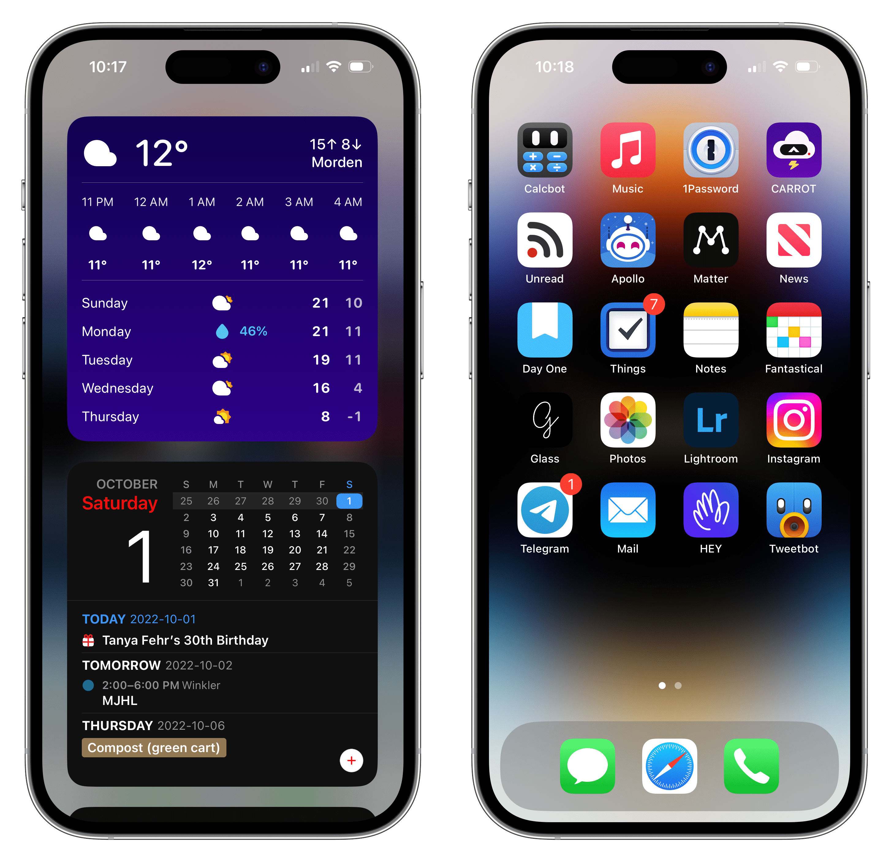

After the release of the iPhone, and several other iPhones, multiple smartphone companies had been wipped off the market, or is on a current decline since the release of the iPhone. Though one still seems to stay comfortably on the market, and in fact has a higher user percentage than appple by a huge margin. Click the button to reveal the answer!
Now I just could list ideas on how Apple is better, but instead I'll make it more interesting
Simplicity
Using an iPhone is a lot more simple compared to an Android in several ways. The UI is simple and easy to use. Apple users have been known to this for years now, something that works and fits them right out of the box. The simple home screen and gestures make it easy to navigate. The pre-installed essential apps cover basic needs, while the App Store offers variety to others. The simple settings menu, making consumers able to customize their iPhone in an easy manner.

Assistive Access
Apple has just rolled out a recent new feature that makes their User Interface even simpler. With only certain apps available, the UI is very simple. This is a great option to older folks who sometimes forget things, or for people who have short-term memory. Even from my perspective, sometimes my grandparents forget where their apps are on their iPhone, and or get confused with apps, not knowing their use.
"Despite all the promises by Android phone makers to streamline their skins, the iPhone remains the easiest phone to use by far. Some may lament the lack of change in the look and feel of iOS over the years, but I consider it a plus that it works pretty much the same as it did way back in 2007. Pick it up, turn it on, touch the app to open." - Tom's Guide
Easiest phone to use in the entire world!
Another advantage of the iPhone over Android is the ease of use! I personally can say that the iPhone is super easy to use. From my personal perspective, when I had first gotten my iPhone when I was younger, it was a huge upgrade, the iPhone X without the home button. At first glance, I had thought, well this will be a big change. Though rest assured, it was but in a good way. The upgrade was great and all, but the iPhone was practically the same! The previous iPhone was several years older, yet the new iPhone was super easy to use! Apple does not offer a huge variety of customization, surprisingly, it actually works in favor towards them making consumers being able to quickly understand iPhone. Once unlocking the iPhone, the organisation of the apps are organised very well, with apps being sorted in columns and simple rows, with users being able to move apps around.
"The simple interface of the iPhone allows you to easily reach your endpoint destination without getting confused". - MobileTrans

Better hardware and software integration
Compared to the majority of Androids, iPhones tend to have better performance in general, and tend to be a lot smoother, as well as in older models. iPhones also have great internal storage space, leaving you with endless space. The minimum storage for the iPhone 13 and 14 is 128GB. In my opinion, majority of people this is a perfect amount need nowhere near that. On my iPhone 14, I have used 112 GB of storage, though I have EVERYTHING on my phone including games, 4K videos at 60fps, photos, apps for days, etc. Also, the iPhone Bionic chip is quicker than the Qualcomm processor of Android, which is tested by doing daily tasks on the phone.
Not to mention the many Apple features
- Apple Car Play
- Apple Pay
And many more aswell!
Apple Pay

Instead of having to pull your card out of your bag or reach deep down inside your pocket. Simply pull out your iPhone and double tap the power button Apple Pay is a form of payment using your iPhone, Mac, iPad or Apple Watch. It allows users to make contactless payments in person, on the App Store, and on the web using Safari. |
When you make a purchase, Apple Pay uses a device-specific number and a special transaction code. So, your card number is safe from others and never stored on your device or on Apple servers. And when you pay, your card numbers are always kept to yourself, without having to risk losing your data. In addition, when you pay with a debit or credit card, Apple Pay doesn’t keep transaction information. This makes sure no information can be tied back to you. Finally, every single purchase with Apple Pay requires some form of identification, either Passcode, Face ID, or Touch ID. |
Apple Ecosystem, Truly Amazing
The Apple Ecosystem is truly amazing. Having so many features and all the products connecting to one-in-other is so cool. From my perspective, its so neat, being able to listen to music with my AirPods on my Apple Watch, or even being able to unlock your Mac with your Apple Watch is so cool. Apple's products being able to connect all so seamless, resulting in a cohesive digital environment that promotes convenience, productivity, and a better and smoother consumer experience.